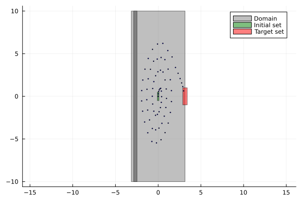
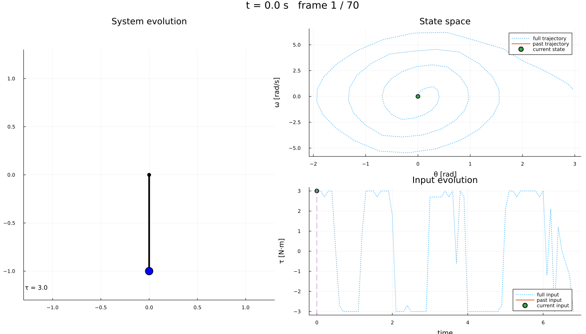

Getting started: swinging up a pendulum
This page is one complete run of Dionysos, from a differential equation to a controller with a certificate and a simulation of the closed loop. Every other example is the same five steps with a different plant, so it is worth reading once in full.
The plant is a pendulum hanging from a pivot, driven by a torque $u$ at that pivot. Its state is the angle $x_1$ (zero hanging down) and the angular velocity $x_2$:
\[\dot{x}_1 = x_2, \qquad \dot{x}_2 = -\frac{g}{l}\sin(x_1) + u .\]
The torque is too weak to lift the pendulum directly, so the controller has to swing it: rock back and forth to pump in energy, then catch it upright at $x_1 = \pi$. Nothing below tells it to do that. We state where it starts, where it must end up, and how finely to discretise; the swing-up comes out of the synthesis.
using StaticArrays, JuMP, Plots
using Symbolics, MathOptSymbolicAD
using Dionysos
const DI = Dionysos
const UT = DI.Utils
const ST = DI.System
const MP = DI.MappingDionysos.MappingStep 1 — describe the system
A Dionysos model is a JuMP model with Dionysos.Optimizer. State and input are ordinary JuMP variables, and their bounds are the constraint sets: X and U of the control problem, not hints or initial guesses. Everything outside them is off-limits to the controller, and to the abstraction.
l, g = 1.0, 9.81
model = Model(Dionysos.Optimizer);The angle is periodic: $-\pi$ and $\pi$ are the same physical configuration. Declaring the state space as one full turn, and telling the solver that coordinate wraps (below), is both the honest model and a third fewer cells than pretending the angle runs from $-\pi$ to $2\pi$.
@variable(model, -π <= x1 <= π)
@variable(model, -10.0 <= x2 <= 10.0)
@variable(model, -3.0 <= u <= 3.0);The dynamics are written with ∂ for continuous time (Δ would make it a discrete-time model — mixing the two is an error). Which variables are states and which are inputs is inferred: a variable carrying a ∂ is a state, one that only appears on a right-hand side is an input.
@constraint(model, ∂(x1) == x2)
@constraint(model, ∂(x2) == -(g / l) * sin(x1) + u)\[ {\textsf{∂}\left({x2}\right)} - {\left({{-9.81} * {\textsf{sin}\left({x1}\right)}} + {u}\right)} = 0 \]
Step 2 — state the specification
start and final are sets, not points. Here: start near the bottom with a little velocity, finish near the top having nearly stopped.
@constraint(model, start(x1) in MOI.Interval(-0.09, 0.09))
@constraint(model, start(x2) in MOI.Interval(-0.5, 0.5))\[ \textsf{start}\left({x2}\right) \in [-0.5, 0.5] \]
The upright position sits exactly on the seam of the period, so the target box straddles it. That is fine: the periodic mapping splits it into the two pieces at either end of the turn.
@constraint(model, final(x1) in MOI.Interval(π - 15π / 180, π + 15π / 180))
@constraint(model, final(x2) in MOI.Interval(-1.0, 1.0))\[ \textsf{final}\left({x2}\right) \in [-1, 1] \]
One more thing makes the task interesting: a band of angles the pendulum is not allowed to pass through. Written over a single coordinate, ∉ is a full-height wall — the box spans the remaining variable's own bounds, so it forbids that angle at every velocity. (The left-hand side has to be a vector, even with one entry, because the set is a vector set.)
@constraint(model, [x1] ∉ MOI.HyperRectangle([-π + 16π / 180], [-π + 38π / 180]));∉ describes the world, not the requirement: the region is carved out of the state space, so those cells are never built. The alternative, x in Always(S), keeps the cells and asks the controller to avoid them — use that when staying inside S is the goal.
Beyond Final and Always, the front-end also expresses EventuallyAlways(S) (reach S and stay) and co-safe LTL formulas over named regions — see the manual.
Step 3 — choose the abstraction
This is the step with no counterpart in classical control, and the one that decides whether synthesis succeeds. Dionysos replaces the infinite state space by a finite grid of cells, and builds a finite automaton whose transitions over-approximate what the real system can do. The jacobian_bound is what makes that over-approximation valid: it bounds how fast neighbouring trajectories can separate, and therefore how far a cell can spread in one time_step.
set_attribute(model, "jacobian_bound", u -> SMatrix{2, 2}(0.0, 1.0, g / l, 0.0))
set_attribute(model, "time_step", 0.1)A periodic coordinate constrains its grid: the period must be a whole number of cells, and the origin must sit half a cell inside it, so that the two ends of the turn line up exactly. A 3° step gives 120 cells per revolution.
h = SVector(3π / 180, 0.05)
set_attribute(model, "state_grid", MP.GridFree(SVector(-π + h[1] / 2, 0.0), h))
set_attribute(model, "input_grid", MP.GridFree(SVector(0.0), SVector(0.3)))Declaring the angle periodic makes the abstraction identify the two ends of the turn, so a swing through $\pi$ costs nothing extra. print_level = 0 keeps the solver quiet; raise it to watch the abstraction being built.
set_attribute(model, "use_periodic_mapping", true)
set_attribute(model, "periodic_dims", SVector(1))
set_attribute(model, "periodic_periods", SVector(2π))
set_attribute(model, "periodic_start", SVector(-π))
set_attribute(model, "print_level", 0);The grid step is the one number to reach for when a problem does not solve. Finer cells mean a less conservative over-approximation and a better chance of success — at a cost that grows exponentially with the state dimension. That trade-off is the central difficulty of abstraction-based control, and the reason for the lazy solvers described in the manual.
Step 4 — solve
No solver was named. A model without modes goes to the uniform grid abstraction; one with @modes goes to the hybrid abstraction. Either can be forced explicitly.
optimize!(model);┌ Warning: Noise is not yet accounted for in system abstraction.
└ @ Dionysos.Optim.Abstraction.UniformGridAbstraction ~/.julia/packages/Dionysos/gFZKe/src/optim/continuous_systems/UniformGridAbstraction/alternating_simulation_problem.jl:642
┌ Warning: The `state_cost` is not yet fully implemented
└ @ Dionysos.Optim.Abstraction.UniformGridAbstraction ~/.julia/packages/Dionysos/gFZKe/src/optim/continuous_systems/UniformGridAbstraction/optimal_control_problem.jl:162termination_status(model)OPTIMAL::TerminationStatusCode = 1Note what a failure would say here: LOCALLY_INFEASIBLE, never INFEASIBLE. The abstraction is sound — a controller synthesized on it is guaranteed correct on the real pendulum — but not complete: if it finds nothing, that is a statement about this discretisation, and a finer grid may still succeed.
concrete_problem = get_attribute(model, "concrete_problem");
concrete_controller = get_attribute(model, "concrete_controller");
abstract_system = get_attribute(model, "abstract_system");
abstract_value_function = get_attribute(model, "abstract_value_function");The controller does not come alone. abstract_value_function is its certificate: for every cell from which the target is reachable, it bounds the worst-case cost of getting there. Cells absent from it are the ones no input sequence can steer to the target — the controller is honest about where it does not work.
Drawing that value function over the abstraction is the clearest picture of what synthesis produced, but this grid has tens of thousands of cells and each one is a separate shape; Path planning shows it on a coarser abstraction where it renders quickly.
Step 5 — run the closed loop
simulate takes the stopping criterion from the specification, so it stops on reaching the target set rather than after a fixed number of steps.
trajectory = Dionysos.simulate(model, SVector(0.0, 0.0); nsteps = 200)Dionysos.System.Trajectory{StaticArraysCore.SVector{2, Float64}, Vector{StaticArraysCore.SVector{1, Float64}}, Nothing, Nothing, Nothing}(StaticArraysCore.SVector{2, Float64}[[0.0, 0.0], [0.01487777307844329, 0.2951190430189206], [0.05806370681040729, 0.5615319661431281], [0.12387284292176304, 0.7439184025134331], [0.2059343981673094, 0.8840571524378043], [0.29786997709359664, 0.9400765097284282], [0.3761409535198408, 0.6132559149363757], [0.40526216746629107, -0.03523470382731064], [0.3677111616767874, -0.7100981997743243], [0.26540680878734824, -1.3200889061484082] … [-0.07496238933112753, 6.133455296649184], [0.5470305180314003, 6.208320157561451], [1.1288331927104345, 5.364863775498501], [1.6288741147354688, 4.620749371394732], [2.028117122759534, 3.381062871627534], [2.3308780407829435, 2.702506471191991], [2.5686091326212797, 2.0820439722677357], [2.749966721900951, 1.571352955316116], [2.88460804812909, 1.1423133976705202], [2.972979053037591, 0.6392119741469328]], StaticArraysCore.SVector{1, Float64}[[3.0], [3.0], [2.6999999999999997], [3.0], [3.0], [0.0], [-2.6999999999999997], [-3.0], [-3.0], [-3.0] … [2.6999999999999997], [3.0], [-1.2], [2.1], [-3.0], [1.2], [0.0], [-0.6], [-1.2], [-3.0]], nothing, nothing, nothing)In the phase plane: the state space with the forbidden band cut out of it, the initial and target sets, and the closed-loop trajectory running between them. The trajectory has to spiral outwards to build up energy before it can be caught at the top — and it does so without ever entering the wall.
fig = plot(; aspect_ratio = :equal)
plot!(concrete_problem)
plot!(trajectory; ms = 1.0, with_arrows = false, color = :blue)
The same run as an animation — the pendulum itself on the left, the phase portrait and the applied torque on the right. The swinging is easiest to see here: the trajectory spirals outwards, gaining energy, before it is caught at the top.
include(
joinpath(
dirname(dirname(pathof(Dionysos))),
"problems",
"Pendulum",
"simple_pendulum.jl",
),
)
anim = Dionysos.animate_trajectory_dashboard(
SimplePendulum.system_plot!(),
trajectory;
xdims = (1, 2),
udims = (1,),
Δt = 0.1,
frame_step = 2,
xlabel_state = "θ [rad]",
ylabel_state = "ω [rad/s]",
ylabel_input = "τ [N·m]",
)Plots.Animation("/tmp/jl_beof07", ["000001.png", "000002.png", "000003.png", "000004.png", "000005.png", "000006.png", "000007.png", "000008.png", "000009.png", "000010.png" … "000027.png", "000028.png", "000029.png", "000030.png", "000031.png", "000032.png", "000033.png", "000034.png", "000035.png", "000036.png"])fps is playback speed, not render cost — pick it from the frame count so the animation runs for roughly ten seconds rather than flashing past.
gif(anim; fps = 4)
Where to go next
- Path planning — obstacles, and a 3-D state space.
- Thermostat — a hybrid model: several modes with guarded switching.
- Overview — the specifications and solvers available, and how they fit together.
This page was generated using Literate.jl.